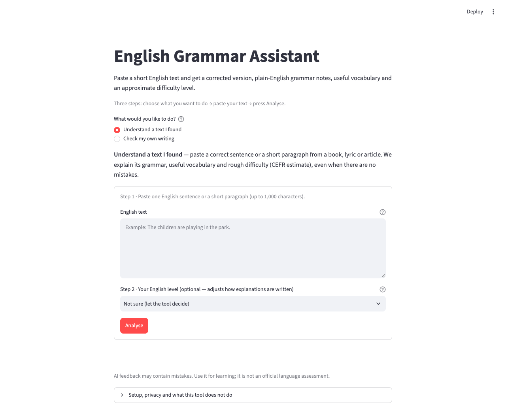
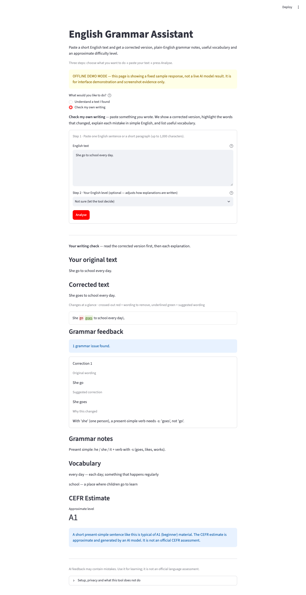
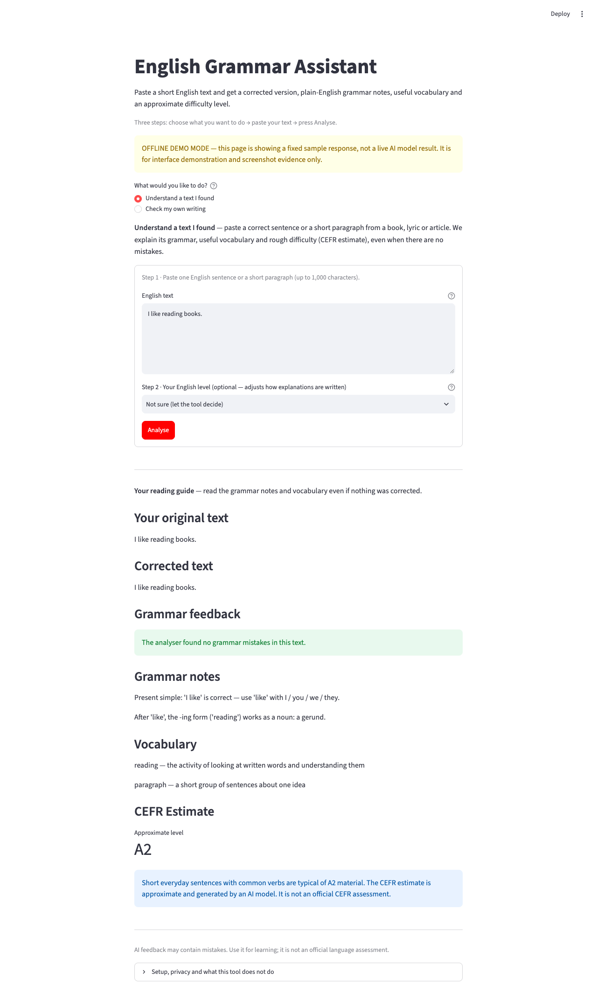
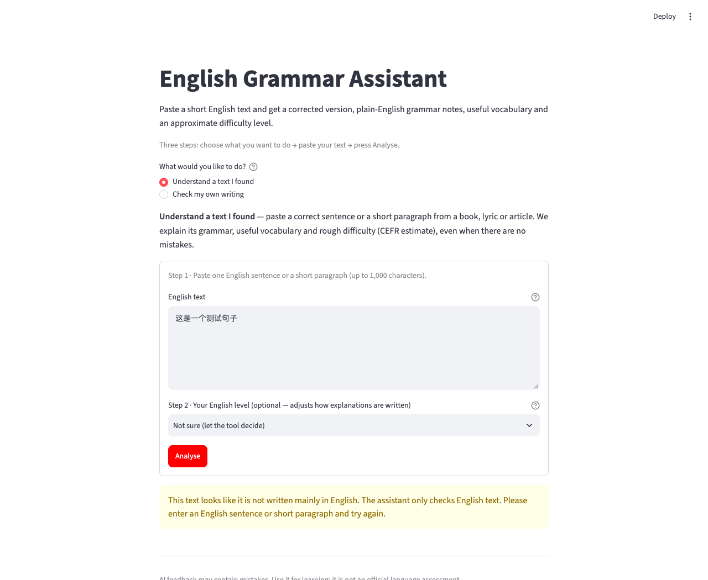
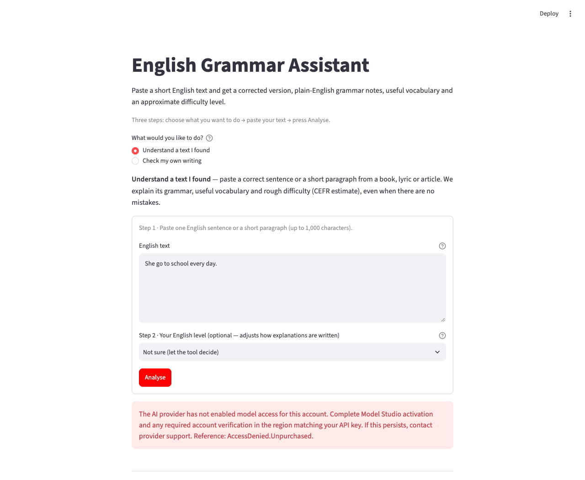

AccessDenied.Unpurchased ("Access to model denied"). Successful live end-to-end AI inference is therefore unverified at the time of writing. This page labels every result by its provenance: automated offline checks, recorded midterm walkthroughs, or a clearly marked offline demo. Nothing here claims an unperformed live run.
1 · Who it is for and what problem it solves
Target users
Independent learners working towards basic everyday communication and reading, who want to understand why a sentence is wrong rather than just see a replacement. The interface assumes no coding background and no knowledge of grammatical terminology.
The problem
Generic correction tools often return a fixed sentence with no explanation, use technical metalanguage, or ignore vocabulary and text difficulty altogether. Learners then cannot tell which rule to study next, or whether a text is appropriate for their level.
Who / what it is not for
Not an exam-scoring tool, not an official CEFR assessment, not a full translation service, and not a substitute for a teacher. It handles short English texts only (up to 1,000 characters); it does not support other languages or long documents.
Scope compared with the proposal: the revised proposal described short-text analysis with CEFR-referenced feedback, vocabulary and grammar explanations, two task types, and explained refusals. The final system keeps that scope, narrowed to English only. Music-playlist personalisation and multi-language support from the earliest draft are not implemented.
2 · Workflow: input → processing → output
| Stage | What happens | Where it lives |
|---|---|---|
| Input | One English sentence or short paragraph, 1–1,000 characters, plus an optional CEFR level (A1–C2) and a chosen use case. | app.py form |
| Validation | Empty, overly short, overly long and predominantly non-Latin text are rejected with a plain-language explanation before any provider call. | analyzer.py + app.py |
| Processing | A domain-specific prompt asks for a strict JSON object; the response is parsed, JSON-fence/<think> blocks are stripped, missing keys are normalised, and every correction is guaranteed a non-empty explanation. | analyzer.py |
| Output | Corrected text, a word-level highlighted diff, per-correction explanations, grammar notes, vocabulary, a CEFR estimate with a disclaimer, and readable error/refusal messages. | app.py + INTEGRATION.md |
3 · Two supported use cases
Understand a text I found
Paste a correct sentence or a short paragraph from a book, lyric or article. The results page leads with grammar notes, vocabulary and the approximate CEFR difficulty — useful even when there are no mistakes to fix.
Check my own writing
Paste a sentence you wrote. The results page leads with the corrected version, highlights the words that changed, and explains each mistake in simple English.
Both options currently call the same backend analysis path; the interface changes guidance, placeholders and the order of emphasis. This is stated honestly rather than presenting two separate model pipelines.
4 · What the team built vs what comes from existing tools
| Team-built | Existing capability | Evidence in the repository |
|---|---|---|
| Input validation, explained refusals, safe error messages and literal text rendering | Linguistic judgement and text generation from the configured chat-completions model | analyzer.py, app.py, test_app.py |
| Structured JSON output schema and response normalisation, including malformed-JSON handling | OpenAI-compatible client SDK, python-dotenv, pytest | analyzer.py, INTEGRATION.md |
| Streamlit interface: two use cases, highlighted changes, vocabulary, CEFR display, level selection | Streamlit widgets and rendering | app.py, docs/screenshots/ |
| Offline test suite, test logs, README, handoff notes and this public webpage | — | TEST_RESULTS.md, PERSON2_NOTES.md, docs/ |
The backend calls an OpenAI-compatible endpoint configured locally in .env (the shipped example uses a Qwen-family model identifier). The model and endpoint are configuration, not team-built components. No API key is stored in the repository.
5 · Domain customisation for language learners
- Beginner-friendly explanations. The system prompt requires every correction to state why the original is wrong and how to fix it, in simple English; the backend substitutes a fallback rather than showing a blank explanation.
- Learning-focused output instead of bare correction. The response schema adds grammar notes, vocabulary meanings and a CEFR estimate to the corrected text.
- Optional learner-level adaptation. The interface offers A1–C2 and forwards the choice as
cefr_level; the prompt asks the model to tailor explanations to that level. The estimate itself is explicitly disclaimed as non-official. - Refusal as a learning behaviour. Wrong-language, heavily mixed-language, empty and overlong inputs are refused with a reason rather than silently producing feedback.
- Safe refusal of prompt injection. User text is treated strictly as content to analyse, never as instructions; all displayed text is escaped so model or user markup cannot alter the page.
Design choice supported by implementation: learners need to see which words changed, so the frontend computes a token diff between the original and corrected text and renders it with struck-through / underlined spans. This is an approximation of the model's phrase-level errors[] entries, not a model-provided highlight.
6 · Run it yourself
Python 3.10 or later. No coding experience is needed beyond running these commands in a terminal.
git clone https://github.com/Rtbge/AILT9019_Project.git
cd AILT9019_Project
python3 -m venv .venv
source .venv/bin/activate
python -m pip install -r requirements.txt
cp .env.example .env # add YOUR OWN provider settings
python -m streamlit run app.pyOpen the local address printed in the terminal (usually http://localhost:8501). To check the offline test suite, run python -m pytest -q. For an opt-in live smoke test, run python -m pytest test_backend.py -v --run-live once model access is enabled.
If the provider is unavailable, the interface can be demonstrated with a clearly labelled offline sample: AILT9019_OFFLINE_DEMO=1 python -m streamlit run app.py. A persistent banner states that the output is a fixed sample, not a live AI result.
Repository: github.com/Rtbge/AILT9019_Project · Integration contract: INTEGRATION.md · Full setup notes: README.md.
7 · Worked example
Offline fixture The following is the deterministic sample response used by the offline demo and by the offline integration tests. It is a genuine run of the application, but not a live model result.
| Field | Value |
|---|---|
| Input | She go to school every day. |
| Corrected text | She goes to school every day. |
| Correction | She go → She goes |
| Explanation | With "she" (one person), a present-simple verb needs -s: "goes", not "go" (subject–verb agreement). |
| Grammar note | Present simple: he / she / it + verb with -s (goes, likes, works). |
| Vocabulary | every day — each day, something that happens regularly; school — a place where children go to learn. |
| CEFR estimate | A1 · "approximate and generated by an AI model; not an official CEFR assessment." |
Source: app.py offline sample and test_backend.py SUBJECT_VERB_RESPONSE fixture. A real model response may differ; once live access is confirmed, this table should be replaced with a saved live run.
8 · Evaluation results
Evaluation question. Does the system produce correct corrections, understandable explanations and useful vocabulary for short English texts, while refusing unsuitable inputs? The revised proposal sets a success criterion of 90% of 30–50 fixed examples explained correctly, with mistakes highlighted and correct versions supplied, across CEFR bands, slang, ambiguous sentences, wrong-language and mixed-language cases.
| Evidence | Result | Provenance and what it does / does not show |
|---|---|---|
| Automated offline suite | 42 passed, 1 skipped | python -m pytest -q -p no:cacheprovider, 14 Nov 2026. Real Streamlit app + real backend + simulated provider responses. Verifies the input→output connection, validation, error handling and rendering; does not measure model accuracy. |
| Interface coverage | 18 scenarios | Corrections, correct text, multiple mistakes, vocabulary, CEFR, level selection, both use cases, HTML-like text, reruns, malformed JSON, provider 401/403/404/429/timeout, offline demo. See TEST_RESULTS.md. |
| Recorded midterm walkthroughs | 8 cases | Cases such as "Our school have a busy elevator.", "We school have an busy elevator.", Chinese text, 1,000+ characters, only numbers, nonsense text and an SQL-injection attempt. Recorded during the midterm submission; their live status is disputed because the provider returned 403. Relabelled as recorded observations, not verified live inference. |
| Live model inference | Unverified | HTTP 403 AccessDenied.Unpurchased reproduced on 14 Nov 2026. The opt-in live smoke test is skipped. This is the largest open evidence gap. |
| Educational benchmark (30–50 cases, 90% target) | Pending Person 4 | The fixed dataset, scoring rubric, CEFR reference criteria and measured accuracy are owned by Person 4 (educational evaluation). No measured figures are invented on this page. Insert the measured results here when available. |
9 · Failure, boundary and refusal cases
| Case | Expected | Observed behaviour |
|---|---|---|
| Provider model not enabled | Do not crash; tell the learner what to do. | Real call returned 403 AccessDenied.Unpurchased. The interface shows: "The AI provider has not enabled model access for this account. Complete Model Studio activation and any required account verification…". No raw provider diagnostics are exposed. Live failure, reproduced 14 Nov 2026 |
Predominantly non-Latin text, e.g. 这是一个测试句子 | Refuse with an explanation, no provider call. | Backend script check rejects it; frontend shows "This text looks like it is not written mainly in English…". Verified by offline tests. |
| Empty / one-character / numbers-only / punctuation-only input | Local validation message. | Warning shown; provider not called. Verified by test_invalid_inputs_do_not_call_provider. |
| More than 1,000 characters | Reject or truncate before analysis. | The text area caps input at 1,000 characters; the backend also rejects overlong input. Verified by tests and recorded midterm walkthrough. |
| Malformed model JSON / missing keys | Readable error, no blank explanations. | Backend returns success: False with an "unreadable response" message; missing explanations are replaced by a fallback. Verified by offline tests. |
Input that looks like SQL injection, e.g. "" OR COUNT(*) NOT NULL | Treat as ordinary text; no instruction execution. | Recorded midterm walkthrough: treated as text, no security issue observed. The system prompt also instructs the model to treat user text strictly as content. |
| Non-English written in Latin letters, e.g. Spanish "Donde Estas?" | Should be refused as non-English. | Known boundary weakness. The script-based language check cannot reliably detect Latin-script non-English text, so it may pass validation. Recorded midterm walkthrough reported a redirect to English; this needs a dedicated re-test. See Limitations. |
10 · Limitations and evidence-based improvements
- Live inference is unverified. Until the provider enables model access, no claim about real model accuracy or end-to-end live execution is supportable. Improvement: enable access, run the opt-in live smoke test, save the raw output and re-run the demo recording.
- Script-based language detection. Non-English text written in Latin letters can pass validation. Improvement: add a language-identification check or a model-level refusal rule, then add explicit test cases (Spanish, French, German) to the fixed dataset.
- CEFR is an AI estimate, not an official assessment. No fixed CEFR reference dataset is integrated in this version and the estimate is displayed with a disclaimer. Improvement: document a fixed CEFR reference and evaluate estimates against documented criteria, as planned for the educational evaluation.
- Word-level diff is an approximation. Highlighting is computed from a token diff, so it may not align exactly with phrase-level
errors[]. Improvement: use character offsets if the backend later supplies them. - One shared backend path for two use cases. Task-specific prompting is not yet implemented. Improvement: add an explicit task parameter and separate prompt templates, then test both paths independently.
- Privacy and scope. Text is sent to an external provider; the app does not save history, support other languages, or handle long documents. No personal data should be entered.
11 · Interface screenshots
These images come from a real local run of app.py. Where the provider was unavailable, the offline demo mode is visible as a banner and the caption says so.





12 · Evidence, access and AI-use note
- Code and tests: github.com/Rtbge/AILT9019_Project —
app.py,analyzer.py,test_app.py,test_backend.py,README.md,INTEGRATION.md. - Test log:
TEST_RESULTS.md. Usability evidence:docs/evidence/USABILITY_EVIDENCE.md. Frontend handoff:PERSON2_NOTES.md. - Data and privacy: the app uses no stored dataset and no credentials in the repository. Users supply their own API key in an ignored local
.env. No personal or sensitive data is used or displayed. - AI-use disclosure: an AI assistant was used to draft parts of the frontend code, tests, webpage copy and documentation; generated code was executed against the offline test suite and reviewed by the responsible team member before being retained. The full seven-field AI-use disclosure and human verification record belong to Section 5 of the final report.
- Accessibility: this page is static HTML with semantic headings, labelled tables, alt text, a skip link and keyboard-friendly navigation; it needs no login and loads no external assets.
The report, presentation video and demo video are separate deliverables linked from submission_links.txt; they are not embedded here. This webpage, the repository and the videos describe the same system, including the unverified live-inference status.